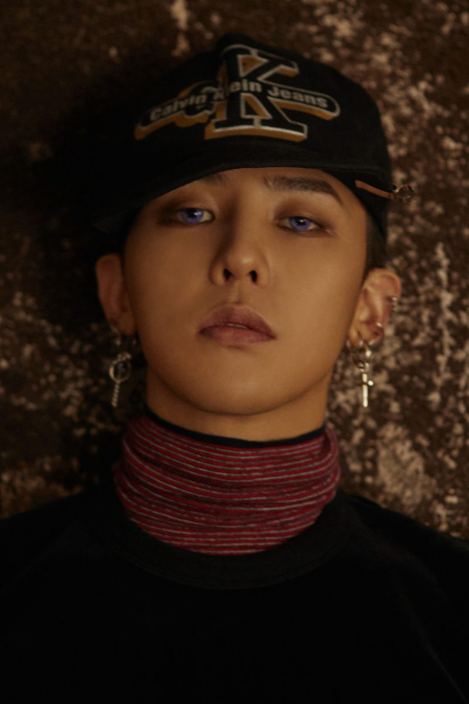

연습생 기간은 SM엔터테인먼트에서 5년, YG엔터테인먼트에서 6년으로, 총 11년이다. 어린 시절부터 많은 방송 경험을 쌓아왔으며 5세 때 뽀뽀뽀 프로그램에 출연한 적이 있고 YG 엔터테인먼트 연습생 오디션 합격에 도움이 되었던 룰라의 뮤직비디오에 꼬마 룰라로 참여한 경력이 있었다. 또한 아들의 재능을 일찍 알아본 어머니가 G-DRAGON을 데려가서 다양한 오디션과 대회에 자주 참가시켰다고 했었다.
1995년에 꼬마 룰라가 해체되었고 이후에 가족과 스키장에 놀러갔다가 우연히 춤 경연 대회에 참가하였는데 이곳에서 1위를 했었다. 이때 그 대회의 사회자였던 SM 엔터테인먼트의 이수만의 눈에 띄어서 회사에 G-DRAGON을 영입하였고 SM 엔터테인먼트에서 연습생 생활을 8살 때부터 약 5년 간 했었다. 그러다가 G-DRAGON이 친구의 집에서 우 탱 클랜의 음악을 접하게 되었고 이때부터 지누션이 하였던 힙합 아카데미에 들어가서 랩을 배우기 시작했었다
YG 엔터테인먼트에 이적하게 된 계기는 X-Teen의 이희성이 작사, 작곡한 2001 대한민국 Hip Hop Flex 음반에 참여하면서였었다. 공식적으로 첫 음악 활동이기도 한 이 음반에서 지디는 13살 래퍼라는 특이한 점으로 많은 관심을 받았었고 타이틀 곡인 Realize Yourself 곡의 참여도 모자라 G-DRAGON이라는 제목의 곡까지 수록되었다. 직접 가사를 작사하였지만 여러 가지 면에서 미흡한 점이 많아서 랩 작사는 다른 사람들이 도와주었다고 했었다. 이 음반을 계기로 이희성이 G-DRAGON에게 YG 엔터테인먼트 연습생 오디션을 제안하였고 2002년에 SM 엔터테인먼트에서 나온 뒤 YG 엔터테인먼트에 이적했었다. 그리고 SWi.T와 함께 대한민국 애니메이션 스페이스 힙합덕의 주제가를 불렀었다.
자서전에 가까운 세상에 너를 소리쳐! 책을 보면 지드래곤이 13세부터 작곡 수업을 받았다는 이야기가 있는데 '내일까지 가사에 곡 붙여 와', '이거 샘플링 해 와'라는 식으로 연습을 했었다고 한다. 태양과 GDYB로 준비하다가 빅뱅으로 데뷔하는 프로젝트로 결정되자 지디는 이에 대한 불만이 많았는데 본인은 몇 년 동안 데뷔를 준비하였지만 다른 멤버들은 기간이 짧은 편이어서 걱정이 되었다고. 결과적으로는 기우가 되었지만 말이다.